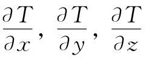
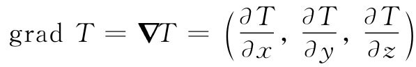

当场随时间变化时，可通过给出场对时间的微商加以描述。我们希望用同样办法来描述场对位置的变化，因为对于例如在一点的温度与在邻近一点的温度间的关系，我们是感兴趣的。怎样求温度对位置的微商呢？我们求温度对x的微商吗？还是对y，或是对z？
有用的物理定律应当不依赖于坐标系的取向。因此，它们应被写成两边都是标量或两边都是矢量的一种形式。一个标量场的微商，比如说∂T/∂x，究竟是什么呢？是标量、矢量，还是其他什么东西？它既不是标量，也不是矢量，因为正如你能容易领会的，假如我们取不同的x轴，∂T/∂x肯定会不同。可是要注意，微商可能有三个：∂T/∂x，∂T/∂y和∂T/∂z。由于有这三个微商，而我们又知道要形成一矢量需要三个数，也许这三个微商就是一个矢量的分量：
当然，一般并非任何 三个数都能构成为一矢量。只有当我们旋转坐标系，矢量的各个分量按照正确的方式变换时，这才成立。所以需要分析坐标系旋转时，这些微商究竟是如何变换的。我们将证明式（2.11）确实是一个矢量。当坐标系转动时，这些微商的确按正确的方式变换。
我们可用几种方法来看这个问题。一个方法是，提一个答案与坐标系无关的问题，并尝试用“不变量”的形式来表示这一答案。例如，若S=A·B，而且若A和B都是矢量，则我们知道——因为我们已在第1卷第11章中加以证明——S是一个标量。无需研究它是否会随坐标系改变而改变，我们就已知道 S是一个标量，因为它是两个矢量的标积，所以它不可能 改变。与此相仿，如果我们有三个数B1 ，B2 ，B3 ，并且对每一个 矢量A都能找出
Ax B1 +Ay B2 +Az B3 =S， （2.12）
式中S对于任何坐标系都相同。那么，这三个数B1 ，B2 ，B3 必定 是某一矢量B的分量Bx ，By ，Bz 。
现在让我们考虑温度场。假设取P1 和P2 两点，它们分开一小间距ΔR。P1 处的温度为T1 而P2 处的为T2 ，彼此间的差ΔT=T2 -T1 。在这些实际的物理点，温度肯定与为测量其坐标而选取的各坐标轴无关。尤其是，ΔT为一个与坐标系无关的数值。所以它是一个标量。
图2-5 矢量ΔR，其分量为Δx，Δy和Δz
如果我们选取一组方便的坐标轴，则能写出T1 =T（x，y，z）和T2 =T（x+Δx，y+Δy，z+Δz），其中Δx，Δy和Δz是矢量ΔR的分量（图2-5）。记住式（2.7），我们便可以写出：
式（2.13）的左边是一个标量。右边是各含有Δx，Δy和Δz（一个矢量的分量）的三个乘积之和。这样我们得出结论，这三个数值

也是一矢量的x，y和z分量。我们用符号▽T描写这个新矢量。这个符号▽是Δ的颠倒，这会使我们回忆起微分来。人们用各种不同方式来读▽T：“del-T”，或“T的梯度”，或“grad T”，
 [1] . （2.14）
利用这个符号，可以把式（2.13）重写成一个更简洁的形式：
ΔT=T·ΔR. （2.15）
口头上这个式子说，两邻近点之间的温度差等于T的梯度与两点间位移矢量的点积。式（2.15）的形式也清楚地说明了上面我们关于▽T确是一个矢量的证明。
也许你还未相信吧！让我们用另一种办法来证明它（不过，如果你仔细加以考察，你可能会看到这实际上是兜一个更大圈子的同一种证法）。我们将证明，▽T的分量会按照与R的分量完全相同的方式变换。如果它们的确是这样，则按照第1卷第11章里我们关于矢量的原来定义，▽T就是一矢量。试取一个新坐标系x′，y′，z′，并用这一新系统算出∂T/∂x′，∂T/∂y′和∂T/∂z′。为了使事情稍微简单些，我们令z=z′，以便可以忘记z坐标。你尽可以自己检验更普遍的情况。
我们取一个相对于xy系转过角度θ的x′y′系，如图2-6（a）所示。对于点（x，y），在加撇系统中其坐标为：
x′=xcosθ+ysinθ； （2.16）
y′=-xsinθ+ycosθ. （2.17）
或者，解出x和y，则得：
x=x′cosθ-y′sinθ； （2.18）
y=x′sinθ+y′cosθ. （2.19）
如果任何一对数字在用这些方程进行变换时，其方式与x和y的变换方式一样，那么它们便是一个矢量的分量。
图2-6 （a）变换到一个已转动了的坐标系上去；（b）间距ΔR与x轴平行的一个特殊情况
现在让我们来看看如图2-6（b）所选取的两个邻近点P1 和P2 的温度差。若我们用x和y坐标来计算，则可以写成
因为Δy等于零。
在那个加撇的系统里进行计算，会得出个什么呢？我们应写成
看一看图2-6（b），即可知道
Δx′=Δxcosθ （2.22）
和 Δy′=-Δxsinθ， （2.23）
因为Δx为正时Δy′为负。把这些代入式（2.21），得：
比较式（2.25）和（2.20），我们看到
这个式说明：∂T/∂x可从∂T/∂x′和∂T/∂y′获得，正如同式（2.18）中的x可以从x′和y′获得那样。因此∂T/∂x就是一个矢量的x分量。同样的论据也可以证明，∂T/∂y和∂T/∂z分别为一个矢量的y和z分量。所以▽T肯定是一个矢量，它是从标量场T导出的一个矢量场。